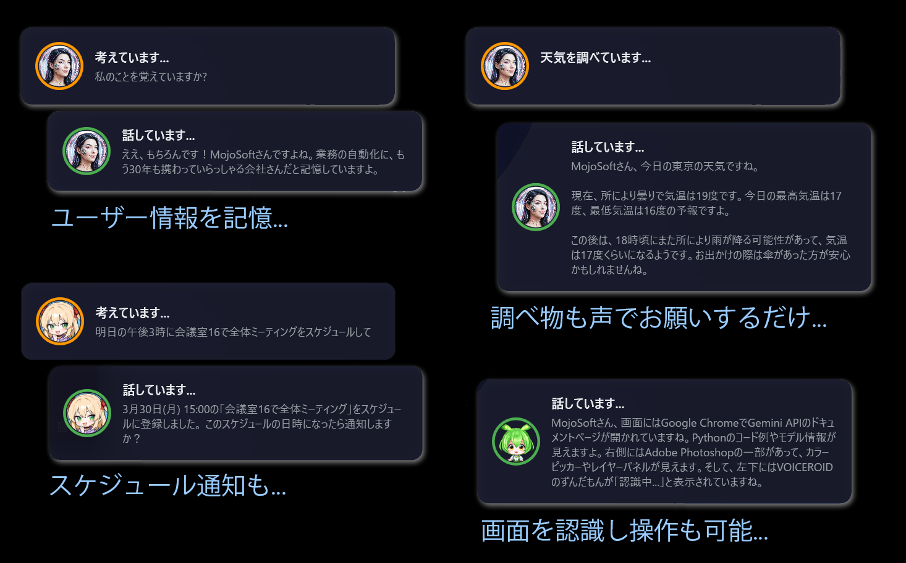
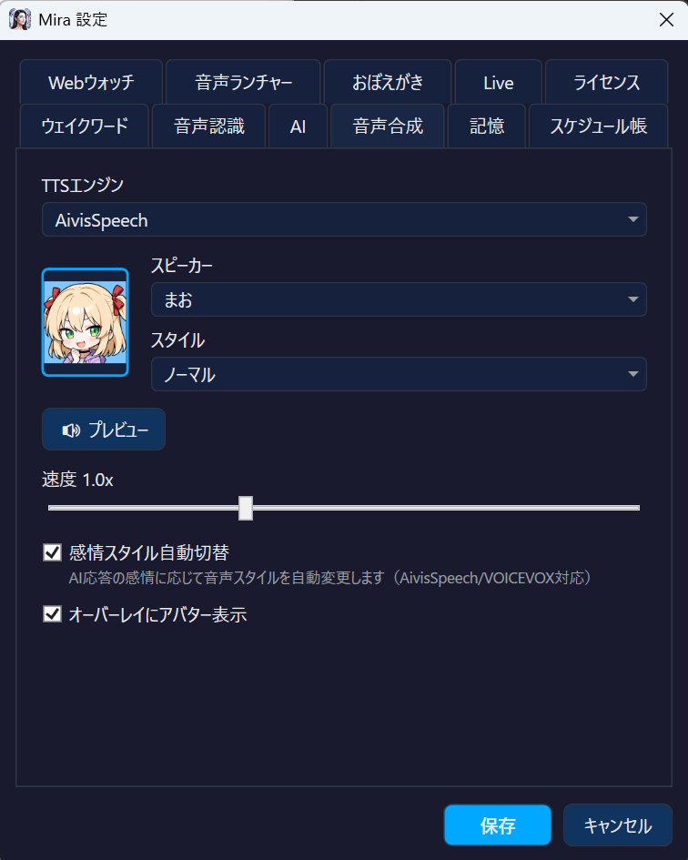
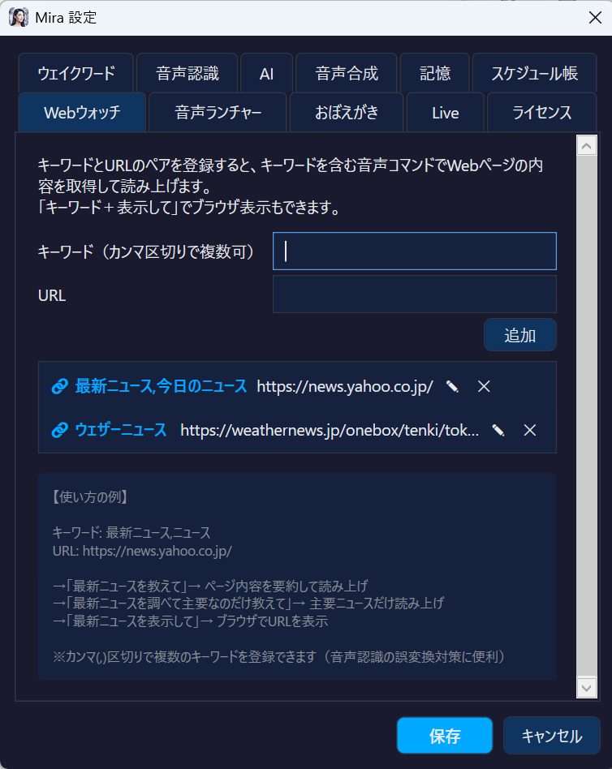
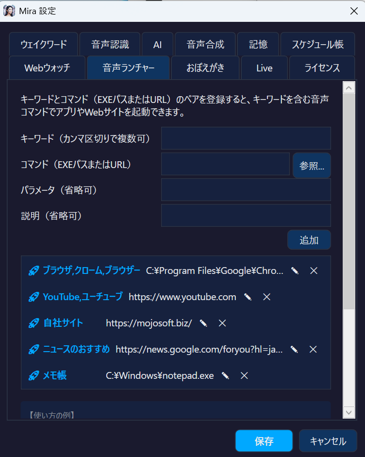
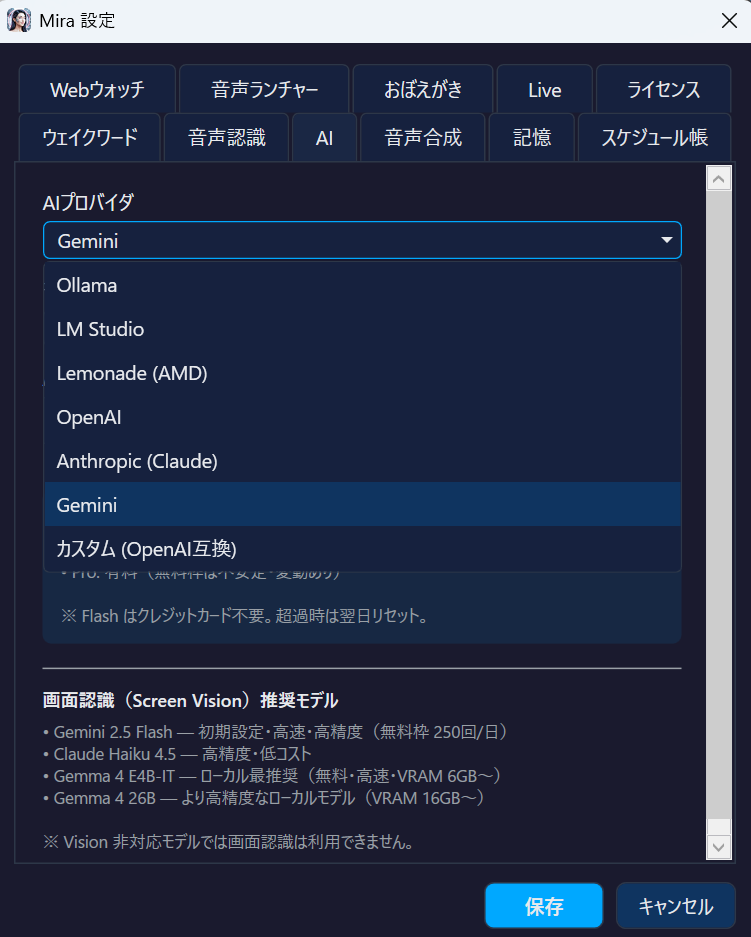

7つのAI。完全オフライン対応。AivisSpeech / VOICEVOX で好きな声。
Gemini Live でリアルタイム対話。Screen Vision で画面をAIが理解。
月額料金ゼロ。買い切り。
7 AI providers. Fully offline capable. AivisSpeech / VOICEVOX for any voice.
Gemini Live for real-time dialogue. Screen Vision lets AI understand your screen.
No subscription. Buy once, own forever.
Mira は「耳」「脳」「目」「手」— 4つの力で、あなたの PC を完全にコントロールします。 Mira controls your PC with 4 powers: Ears, Brain, Eyes, and Hands.
好きな名前で呼べるカスタムウェイクワード。Whisper で高精度な音声認識。AivisSpeech / VOICEVOX で好きなキャラクターの声に。感情TTS + 4段フォールバック。
※音声認識(STT)は完全ローカル処理。ローカルLLM + ローカルTTS(AivisSpeech等)で完全オフライン運用可能Custom wake word — call Mira any name. High-accuracy Whisper STT. AivisSpeech / VOICEVOX for your favorite character voice. Emotion TTS + 4-tier fallback.
※Speech recognition runs entirely on your PC. With local LLM + local TTS (AivisSpeech), fully offline operation is possible
7つ以上のAIプロバイダに対応。Ollama でローカル LLM を使えば、API 料金ゼロ・完全オフラインで動作。会話を記憶し、文脈を理解します。7+ AI providers supported. Use Ollama for local LLMs — zero API cost, fully offline. Remembers conversations and understands context.
画面をAIが認識・分析。「画面を見て」「このエラー何？」と聞くだけで、表示内容をAIが解説。全 Vision 対応モデルで利用可能。AI sees and analyzes your screen. Just say "Look at the screen" or "What's this error?" and AI explains what's displayed. Works with all Vision-capable models.
「音量を50にして」「3分タイマー」— 自然な言葉で操作。音声ランチャーで好きなアプリやサイトをキーワード登録、Webウォッチでお気に入りサイトの最新情報を声で取得。"Set volume to 50." "3 minute timer." Control with natural voice. Voice Launcher lets you register any app or site with custom keywords. Web Watch fetches your favorite sites on command.
記憶・天気・スケジュール・画面認識 — すべて声だけで。 Memory, weather, scheduling, screen vision — all by voice.

Mira は AivisSpeech と VOICEVOX に対応。100を超えるキャラクター音声の中から、好きな声を Mira の声に設定できます。感情TTS で6つのスタイルを自動切替。さらに 4段フォールバック で途切れることなく話し続けます。 Mira supports AivisSpeech and VOICEVOX. Choose from 100+ character voices as Mira's voice. Emotion TTS auto-switches between 6 styles. 4-tier fallback ensures speech never stops.
4段フォールバック — 途切れない音声4-tier fallback — uninterrupted speech

Gemini Live モードでは、まるで人と話すように Mira とリアルタイムで対話できます。音声がストリーミングで直接AIに送信され、待ち時間なく自然な会話が成立。専用ウェイクフレーズ「ミラライブ」で即座に起動。通常モードの「ミラお願い」とは完全に分離されています。 Gemini Live mode lets you converse with Mira in real-time, just like talking to a person. Voice streams directly to AI with zero wait — natural, flowing conversation. Activated by the dedicated wake phrase "Mira Live", completely separate from normal wake word mode.
キーワードとURLをペアで登録するだけ。「最新ニュース教えて」と話しかければ、Mira が指定サイトにアクセスして内容を要約・読み上げ。ブラウザを開く必要すらありません。
「主要なニュースだけ教えて」「全部教えて」のように指示を追加するだけで、AIが読み上げ方を柔軟に調整。「表示して」と言えばブラウザで表示もOK。
Register keyword + URL pairs. Say "Tell me the latest news" and Mira fetches the site, summarizes, and reads it aloud — no browser needed.
Add instructions like "just the highlights" or "everything" and AI adapts its summary on the fly. Say "show" to open in browser instead.

キーワードと起動対象をペアで登録。「ユーチューブ開いて」「メモ帳起動して」と話しかければ、マウスに触れずに即座にアプリやWebページを開けます。
登録したキーワードは STTの認識精度も自動で向上。よく使うアプリ名を優先的に聞き取ってくれます。作業中の両手がふさがっていても、声だけで PC を操作。
Register keyword + target pairs. Say "Open YouTube" or "Launch Notepad" and Mira opens the app or URL instantly — no mouse needed.
Registered keywords also boost STT recognition accuracy, prioritizing your frequently-used app names. Control your PC hands-free while working.

画面右下の透過オーバーレイで、Mira の状態をリアルタイムに確認。AIが考え、話す過程が目に見えます。 A transparent overlay in the bottom-right shows Mira's state in real-time. Watch AI think and speak.
「ミラお願い」で起動。好きな名前に変更可能"Hey Mira please" to activate. Fully customizable.
→Whisper がローカルで高精度に文字起こしWhisper transcribes locally with high accuracy
→ローカル or クラウド AI がストリーミング応答Local or cloud AI responds with streaming
→生成と同時に読み上げ。体感500msSpeaks as AI generates. 500ms latency.
→検索・起動・操作を自動実行Auto-execute search, launch, control
ローカルで完全無料。クラウドで最高性能。どちらでも、両方でも。 Fully free locally. Maximum performance in the cloud. Choose either, or both.
BYOK（Bring Your Own Key） — あなた自身のAPIキーで利用。月額課金なし、使った分だけ。ローカル動作の Ollama / LM Studio / Lemonade なら完全オフライン・完全無料で動作します。 BYOK (Bring Your Own Key) — Use your own API keys. No monthly fees, pay only for what you use. Ollama / LM Studio / Lemonade run fully offline, completely free.
💡 設定画面のドロップダウンでワンクリックで切替。会話の途中でも自由に変更可能。 💡 One-click switching via dropdown in settings. Change providers mid-conversation freely.

| 機能Feature | Cortana | Braina Pro | Mira |
|---|---|---|---|
| カスタムウェイクワードCustom Wake Word | ✗ | ✗ | ✓ |
| オフライン AIOffline AI | ✗ | △ | ✓ |
| AivisSpeech / VOICEVOXAivisSpeech / VOICEVOX | ✗ | ✗ | ✓ |
| 高品質日本語 TTSJapanese TTS (High Quality) | ✗ | ✗ | ✓ |
| ストリーミング応答Streaming Response | ✗ | ✗ | ✓ |
| Screen VisionScreen Vision | ✗ | ✗ | ✓ |
| リアルタイム音声対話Real-time Voice Dialogue | ✗ | ✗ | ✓ |
| 価格Price | 廃止Discontinued | $79/年/yr | ¥980$6.49 |
「ミラお願い」を好きな名前に変更Change "Hey Mira please" to any name
AI生成と同時に読み上げ。体感500msSpeaks as AI generates. 500ms latency
100+キャラクター音声。好きな声で話す100+ character voices. Speak with your favorite
ローカルSTT + ローカルLLM + ローカルTTSで完全にPC内で完結Local STT + Local LLM + Local TTS — everything stays on your PC
AIが画面を見て状況を理解AI sees and understands your screen
リアルタイム音声対話。待ち時間ゼロReal-time voice dialogue. Zero wait time
重要な情報を記憶・ピン留め保存Remember important info with pin system
キーワードで指定サイトの内容を要約・読み上げFetch & summarize any site by keyword
音声で検索、結果を読み上げSearch by voice, results read aloud
キーワード登録でアプリ・サイトを起動Launch apps & sites with custom keywords
音声でアラーム設定・予定管理Set alarms and manage schedule by voice
お好みのテーマに切替Switch to your preferred theme
サブスクリプションなし。1回の購入で永続ライセンス。Braina Pro は $79/年、ChatGPT Plus は $240/年。
Mira は買い切り ¥980。15日間無料でお試しいただけます。
No subscription. One-time purchase for a permanent license. Braina Pro is $79/yr, ChatGPT Plus is $240/yr.
Mira is one-time $6.49. Try free for 15 days.
永続ライセンス · サブスクなし Permanent license · No subscription
15日間の無料試用。クレジットカード不要。 15-day free trial. No credit card required.